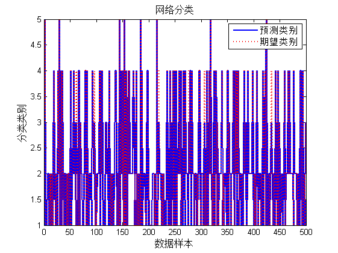

该代码为基于有导师监督的Kohonen网络的分类算法
| 该案例作者申明： |
| 1：本人长期驻扎在此板块里，对该案例提问，做到有问必答。本套书籍官方网站为：video.ourmatlab.com |
| 2：点此从当当预定本书：《Matlab神经网络30个案例分析》。 |
3：此案例有配套的教学视频，视频下载方式video.ourmatlab.com/vbuy.html。 |
| 4：此案例为原创案例，转载请注明出处（《Matlab神经网络30个案例分析》）。 |
| 5：若此案例碰巧与您的研究有关联，我们欢迎您提意见，要求等，我们考虑后可以加在案例里。 |
Contents
清空环境变量
clc clear
数据处理
load data input=datatrain(:,1:38); attackkind=datatrain(:,39); %数据归一化 inputn=input; [nn,mm]=size(inputn); [b,c]=sort(rand(1,nn)); %网络期望输出 for i=1:nn switch attackkind(i) case 1 output(i,:)=[1 0 0 0 0]; case 2 output(i,:)=[0 1 0 0 0]; case 3 output(i,:)=[0 0 1 0 0]; case 4 output(i,:)=[0 0 0 1 0]; case 5 output(i,:)=[0 0 0 0 1]; end end %训练数据 input_train=inputn(c(1:4000),:); output_train=output(c(1:4000),:);
网络构建
%输入层节点数 Inum=38; %Kohonen网络 M=6; N=6; K=M*N;%Kohonen总节点数 g=5; %输出层节点数 %Kohonen层节点排序 k=1; for i=1:M for j=1:N jdpx(k,:)=[i,j]; k=k+1; end end %学习率 rate1max=0.1; rate1min=0.01; rate2max=1; rate2min=0.5; %学习半径 r1max=1.5; r1min=0.4; %权值初始化 w1=rand(Inum,K); %第一层权值 w2=zeros(K,g); %第二层权值
迭代求解
maxgen=10000; for i=1:maxgen %自适应学习率和相应半径 rate1=rate1max-i/maxgen*(rate1max-rate1min); rate2=rate2min+i/maxgen*(rate2max-rate2min); r=r1max-i/maxgen*(r1max-r1min); %从数据中随机抽取 k=unidrnd(4000); x=input_train(k,:); y=output_train(k,:); %计算最优节点 [mindist,index]=min(dist(x,w1)); %计算周围节点 d1=ceil(index/6); d2=mod(index,6); nodeindex=find(dist([d1 d2],jdpx')<=r); %权值更新 for j=1:length(nodeindex) w1(:,nodeindex(j))=w1(:,nodeindex(j))+rate1*(x'-w1(:,nodeindex(j))); w2(nodeindex(j),:)=w2(nodeindex(j),:)+rate2*(y-w2(nodeindex(j),:)); end end
聚类结果
Index=[]; for i=1:4000 [mindist,index]=min(dist(inputn(i,:),w1)); Index=[Index,index]; end inputn_test=datatest(:,1:38); %样本验证 for i=1:500 x=inputn_test(i,:); %计算最小距离节点 [mindist,index]=min(dist(x,w1)); [a,b]=max(w2(index,:)); outputfore(i)=b; end length(find((datatest(:,39)-outputfore')==0)) plot(outputfore,'linewidth',1.5) hold on plot(datatest(:,39),':r','linewidth',1.5) title('网络分类','fontsize',12) xlabel('数据样本','fontsize',12) ylabel('分类类别','fontsize',12) legend('预测类别','期望类别') web browser www.matlabsky.com
ans = 493
相关论坛： 《Matlab神经网络30个案例分析》官方网站：video.ourmatlab.com Matlab技术论坛：www.matlabsky.com Matlab函数百科：www.mfun.la Matlab中文论坛：www.ilovematlab.com |